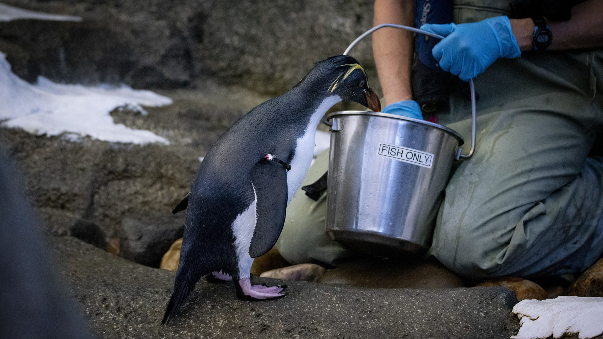

Diet Composition

Rockhopper penguins need a rich diet high in protein, fats, and energy to survive in the cold sub-Antarctic regions. Hong et al. (2021) have highlighted the carnivorous nature of the diet in the wild, which includes zooplankton, squids, tiny fish, krill, and cephalopods based on availability. Antarctic krill (Euphausia sp.) is the predominant menu item of the wild diet, spanning up to 60% of the food intake. The recent discovery of Guímaro et al. (2025) has confirmed arrowhead squid as part of the diet, making cephalopods the second-highest food preference after krill.
Daily Nutritional Requirements of Rockhopper Penguins

In their natural habitat, rockhopper penguins need to engage in physically challenging activities to forage and search for food. As observed by Ramírez et al. (2025), the nutritional requirements consist of krill, fish, and cephalopod diets. These foods give essential macronutrients and minerals necessary to survive in cold environments. It corresponds to 55-65% protein and 15-25% lipids, which offer 5-7 kcal/g of energy content on a dry weight basis (De Felice et al., 2023). One important nutrient source in the diet comes from Antarctic krill because of its nutritious value, with 62-86% being protein and lipids constituting the rest. Lipid reserves are needed during winter since they contain omega-3 fatty acids. However, artificial habitats like aquariums and zoos use frozen whole fish in their diets, thereby leading to possible losses in nutrients (Gimmel et al., 2022). The sources of whole frozen fish include herring, sardine, capelin, and micronutrients. On average, their energy contents vary between 4-6 kcal/g with 50-60% protein and 20-30% fat, with dry matter as a basis (Gimmel et al., 2022). Nonetheless, freezing leads to nutrient degradation, including vitamins A, D, E, and B1 (thiamine).
Feeding Schedule

Rockhoppers, under the natural habitat condition, feed many times a day by making several foraging trips per day. During the reproductive period, the adult rockhoppers have to go for many dives to feed their offspring (Maccapan et al., 2023). Unlike the natural conditions, where the rockhoppers make many dives for food, the captive rockhoppers get many feeds a day. According to the Maryland Zoo (2018), the penguins are fed for 15-30 minutes per meal schedule with assured monitoring to ensure food intake. The food is weighed before each feeding period, and any unconsumed remains are taken out of the tank before the next feeding time. Thus, hours spent searching for food in nature become mere minutes spent during feeding periods in the aquariums.